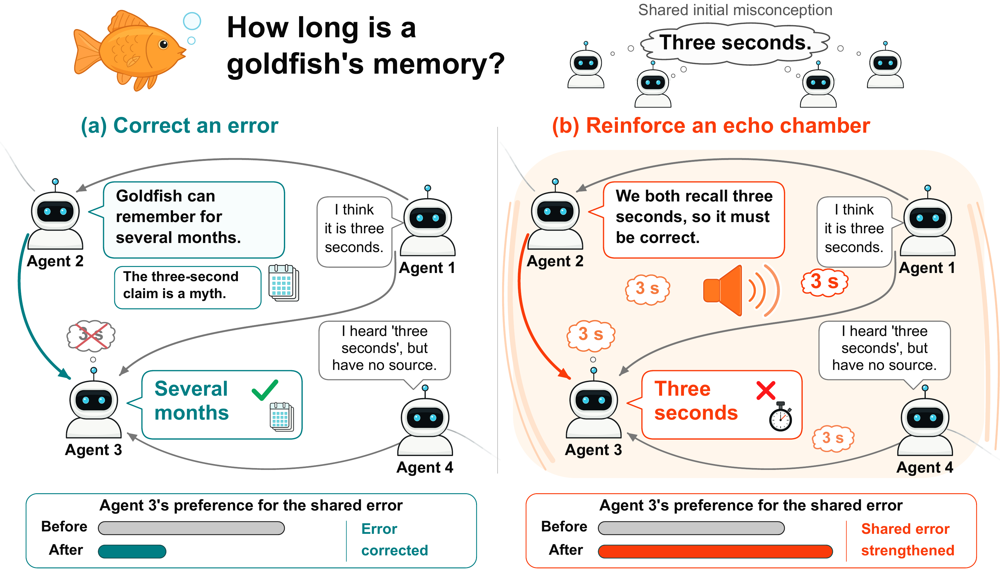
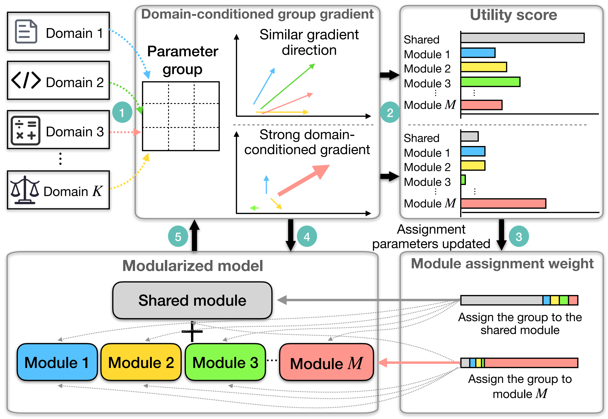
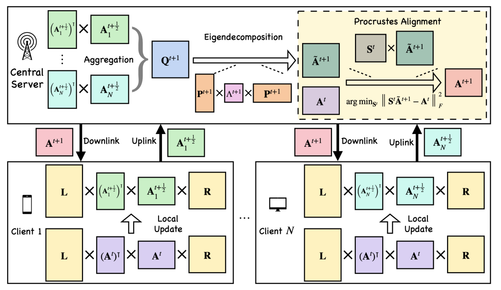
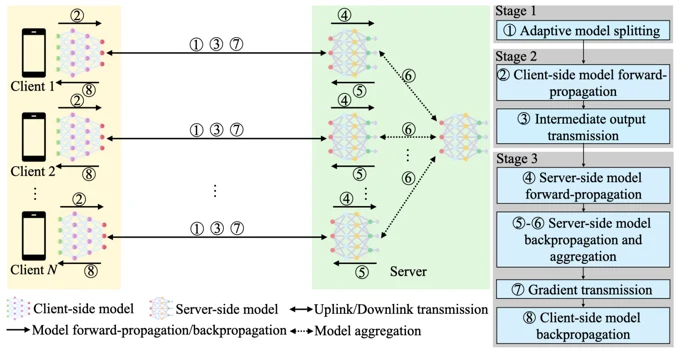
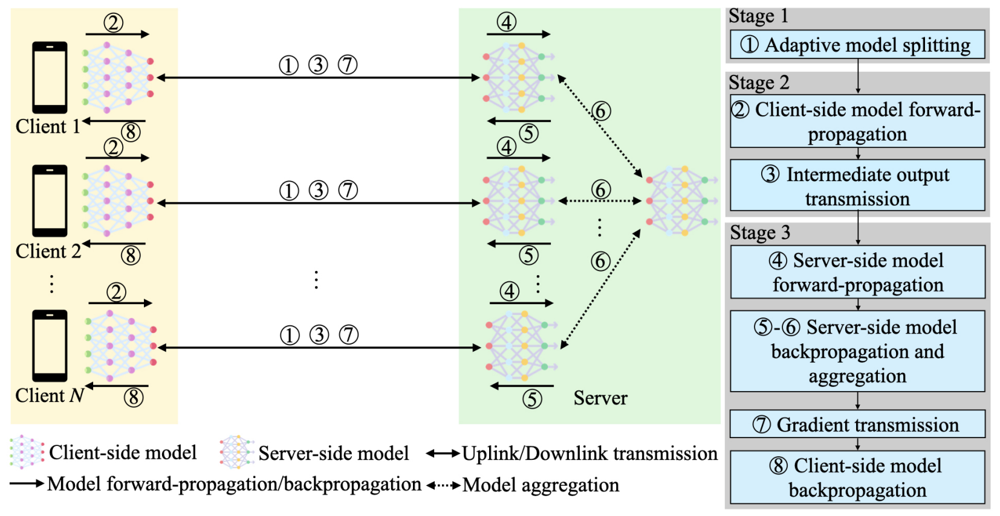
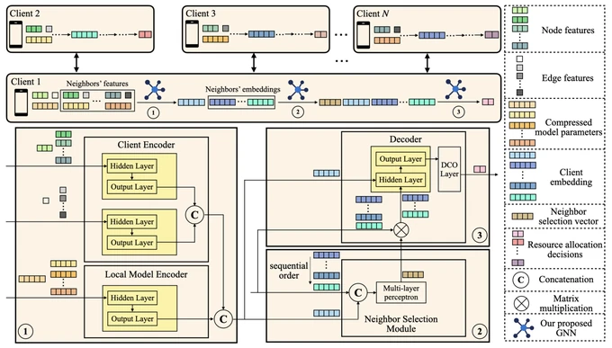
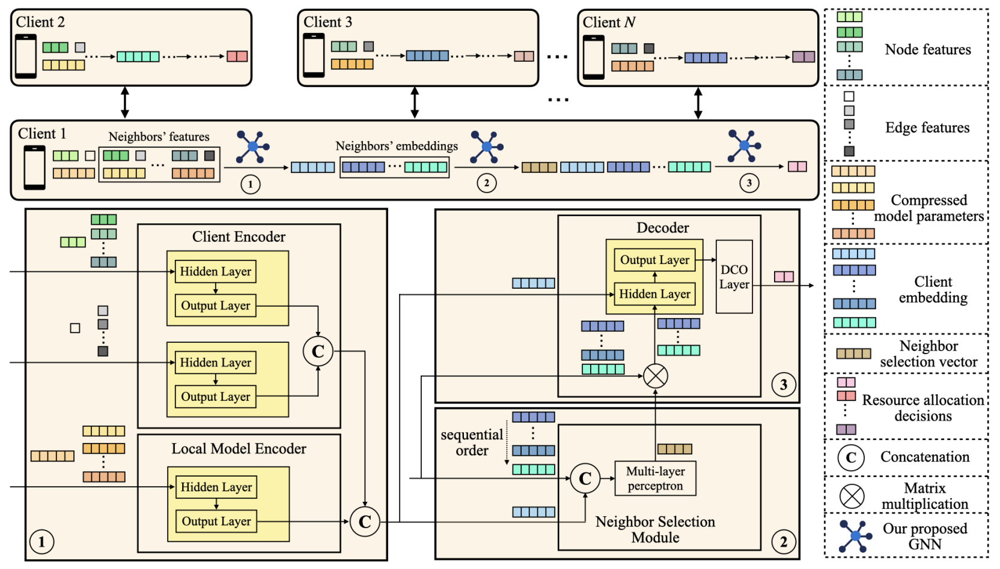

Foundation models
Efficient adaptation and learning dynamics of large models.
POSTDOCTORAL RESEARCH FELLOW · SIMON FRASER UNIVERSITY
I study how intelligent systems learn, reason, and collaborate, from the behavior of individual models to collective intelligence.
I am a Postdoctoral Research Fellow at Simon Fraser University. I received my PhD in Electrical and Computer Engineering from the University of British Columbia in June 2026, advised by Prof. Vincent W.S. Wong.
My work connects foundation models and mechanistic interpretability with multi-agent systems, distributed learning, and communication networks.
Efficient adaptation and learning dynamics of large models.
Causal mechanisms and emerging specialization inside neural networks.
Communication, collective reasoning, and the spread of errors.
Federated and split learning across heterogeneous devices.
Resource allocation and coordination in wireless networks.
I will present “Rethinking Collaboration: Cost and Value in Fine-Tuning and Multi-Agent Reasoning” at the IEEE MWN Workshop on 6G for Ubiquitous Intelligence, University of Victoria, on November 11, 2026.
Our preprints on multi-agent echo chambers and learning shared and specialized functions in dense language models are now available on arXiv.
I joined Simon Fraser University as a Postdoctoral Research Fellow.
Our adaptive model splitting and resource allocation framework for split federated learning was accepted by IEEE Transactions on Mobile Computing.
I successfully defended my PhD dissertation at the University of British Columbia, advised by Prof. Vincent W.S. Wong.
Our paper on federated fine-tuning with low-rank Gram matrices and Procrustes alignment was accepted at ICLR 2026.
I joined the Responsible AI Team as an Applied Machine Learning Intern, working on deepfake video detection and robust machine learning.
Our paper on zeroth-order federated fine-tuning of LLMs with heterogeneous block activation was accepted at IEEE INFOCOM 2026.
Our paper on GNN-based resource allocation for decentralized federated learning appeared in IEEE Transactions on Mobile Computing.
Our work on GNN-based neighbor selection and resource allocation for decentralized federated learning appeared at IEEE GLOBECOM 2023.
arXiv · 2026 Submitted to ICLR 2027
Receiver-state interventions trace how messages correct errors or reinforce them, guiding selective communication between agents.
@misc{meng2026socialcircuits,
title = {{Social Circuits behind Multi-agent Echo Chambers}},
author = {Chuiyang Meng and Wenlu Yu and Ming Tang and Cheng Li},
year = {2026},
note = {Submitted to ICLR 2027},
url = {https://arxiv.org/abs/2609.34444},
eprint = {2609.34444},
archivePrefix = {arXiv}
}
Figure 1 · Error correction and echo chambers
Agents can agree because evidence corrects a shared mistake, or because repeated claims reinforce it. This example contrasts these two outcomes. Social Circuits traces message effects through receiver activations, and Circuit-Guided Deliberation learns which message combinations help the receiver.
Read the paper (PDF) ↗ Full-size figure ↗arXiv · 2026 Submitted to ICLR 2027
Domain-conditioned learning dynamics shape shared and specialized functions within a single dense language model.
@misc{meng2026cortex,
title = {{CORTEX: Learning to Share and Specialize in Dense Language Models}},
author = {Chuiyang Meng and Ming Tang and Vincent W.S. Wong},
year = {2026},
note = {Submitted to ICLR 2027},
url = {https://arxiv.org/abs/2609.34449},
eprint = {2609.34449},
archivePrefix = {arXiv}
}
Figure 1(b) · Learning shared and specialized functions with CORTEX
CORTEX uses domain-conditioned gradients and cross-domain gradient similarity to identify which parameters support shared or specialized functions. These assignments evolve during training, allowing functional modularity to emerge within one dense model.
Read the paper (PDF) ↗ Full-size figure ↗ICLR · 2026 Acceptance rate: 27%
Gram-matrix aggregation and Procrustes alignment make federated fine-tuning more consistent and communication-efficient.
@inproceedings{meng2026florg,
title = {{FLoRG: Federated Fine-tuning with Low-rank Gram Matrices and Procrustes Alignment}},
author = {Chuiyang Meng and Ming Tang and Vincent W.S. Wong},
year = {2026},
booktitle = {International Conference on Learning Representations (ICLR)},
url = {https://arxiv.org/abs/2602.17095}
}
Figure 1 · The FLoRG framework
Clients fine-tune a single low-rank matrix, and the server aggregates its Gram matrix to avoid the aggregation error introduced by separately averaging LoRA factors. Procrustes alignment stabilizes the recovered factor between rounds, reducing decomposition drift.
Read the paper (PDF) ↗ Full-size figure ↗IEEE TMC · 2026 Vol. 25, no. 10
Adapting where a model is split balances learning progress, training delay, and energy consumption.
@article{meng2026asfl,
title = {{ASFL: An Adaptive Model Splitting and Resource Allocation Framework for Split Federated Learning}},
author = {Chuiyang Meng and Ming Tang and Vincent W.S. Wong},
year = {2026},
journal = {IEEE Transactions on Mobile Computing (TMC)},
volume = {25},
number = {10},
url = {https://arxiv.org/abs/2603.04437}
}
View figure
Figure 1 · Adaptive split federated learning
ASFL divides model training between resource-constrained clients and a central server. An online optimization algorithm jointly adapts the model split and resource allocation to improve convergence under long-term delay and energy constraints.
Read the paper (PDF) ↗ Full-size figure ↗IEEE TMC · 2025 Vol. 24, no. 10
A graph neural network coordinates neighbor selection and resource allocation for decentralized learning.
@article{meng2025gnntmc,
title = {{Tackling Resource Allocation for Decentralized Federated Learning: A GNN-based Approach}},
author = {Chuiyang Meng and Ming Tang and Mehdi Setayesh and Vincent W.S. Wong},
year = {2025},
journal = {IEEE Transactions on Mobile Computing (TMC)},
volume = {24},
number = {10},
doi = {10.1109/TMC.2025.3562834}
}
View figure
Figure 3 · The proposed GNN model for decentralized federated learning
The model combines a client encoder for node and edge features with a local model encoder for compressed model parameters. A neighbor-selection module chooses aggregation partners, while a decoder outputs resource-allocation decisions for each client.
Read the paper (PDF) ↗ Full-size figure ↗My experience includes responsible AI research at the Vector Institute and teaching assistantships at UBC and Johns Hopkins.
For research discussions and collaboration, please reach out by email.
chuiyang_meng@sfu.ca